Description: The assignment was to create a city building simulator with mandatory and optional functions. The programming language was chosen by the team.
The project was created with 3 other group members, and to work together, we used GitLab. We used Maven for the testing.
Full task-list(hungarian).
Download packaged game.
Download project files.
Pictures about the game and GitLab:
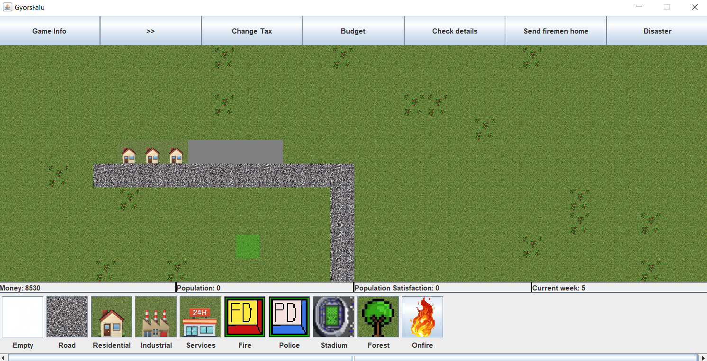 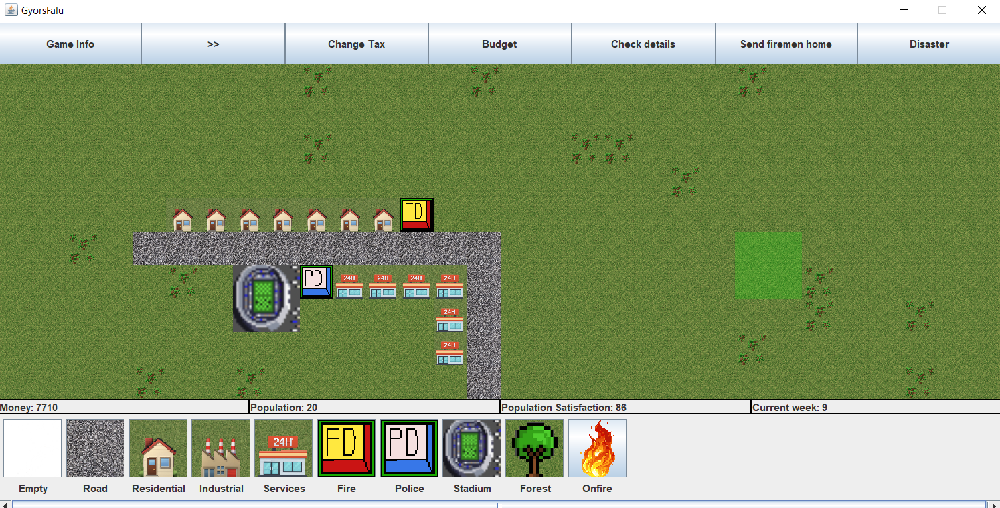 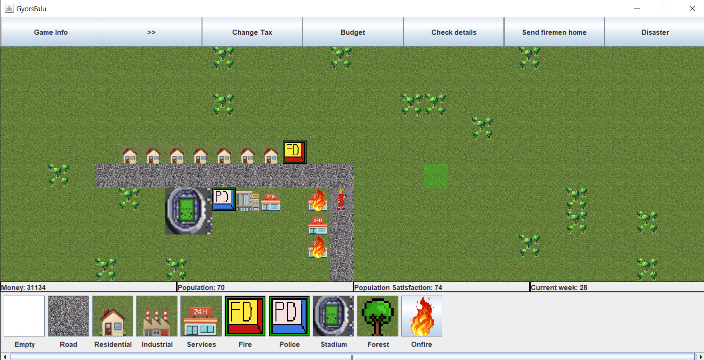 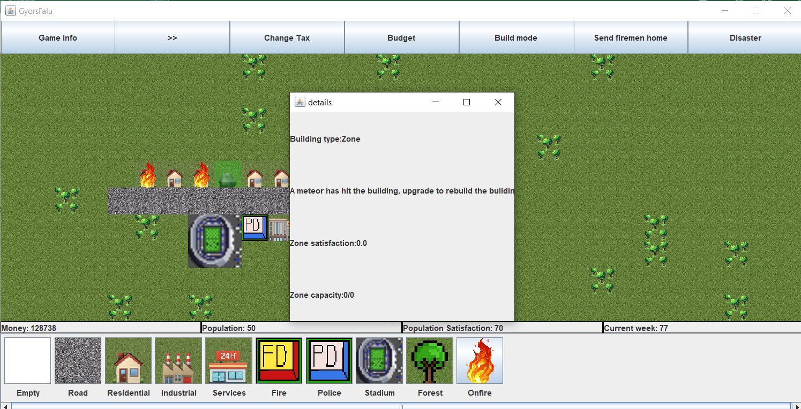 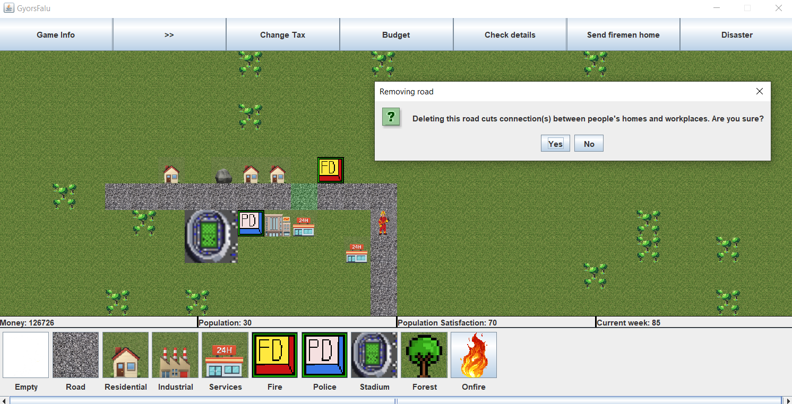
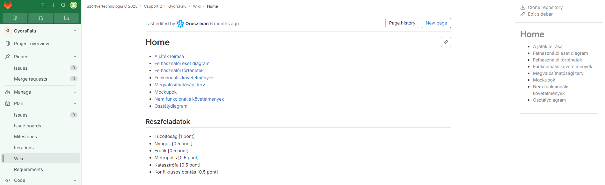
 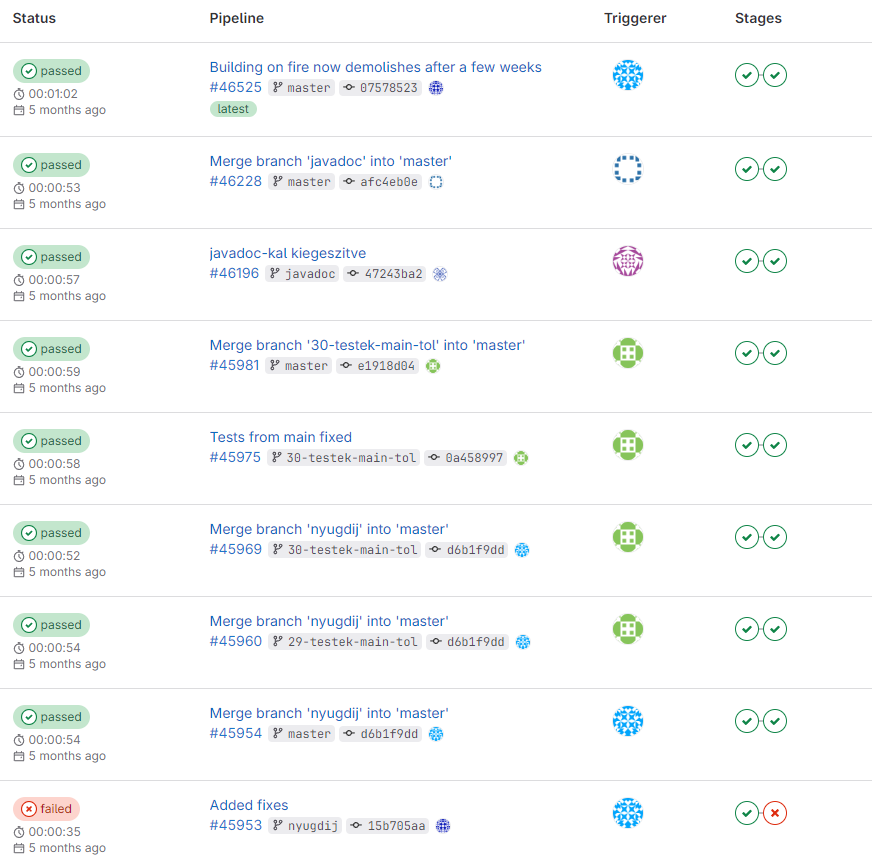
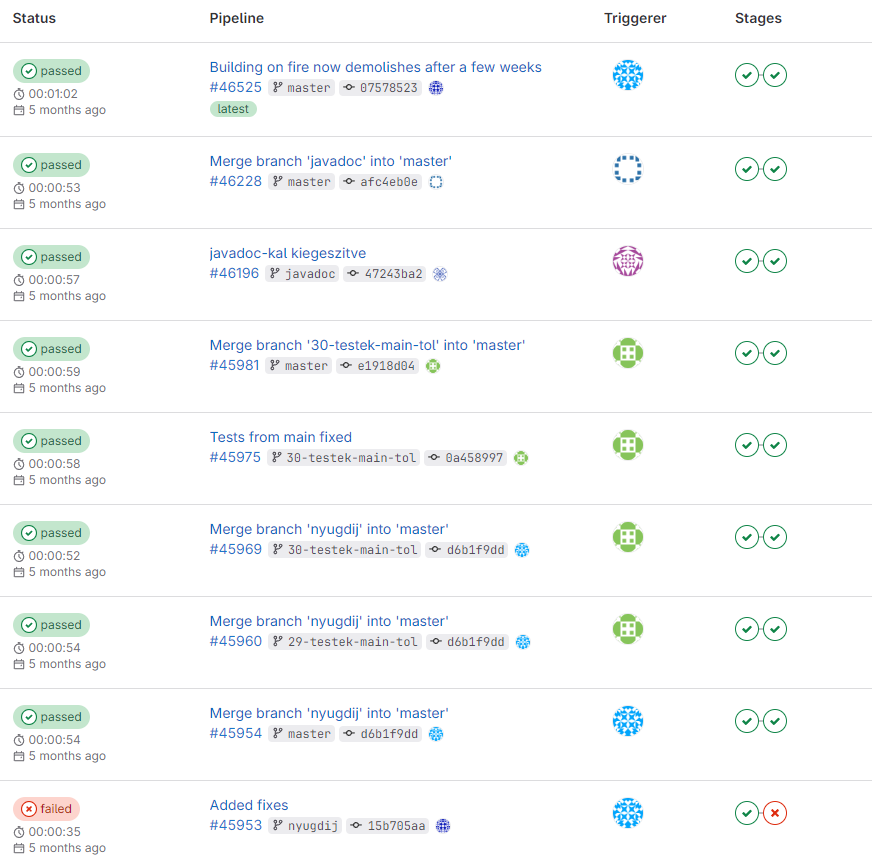
Full task-list(hungarian).
Download packaged game.
Download project files.
Pictures about the game and GitLab:
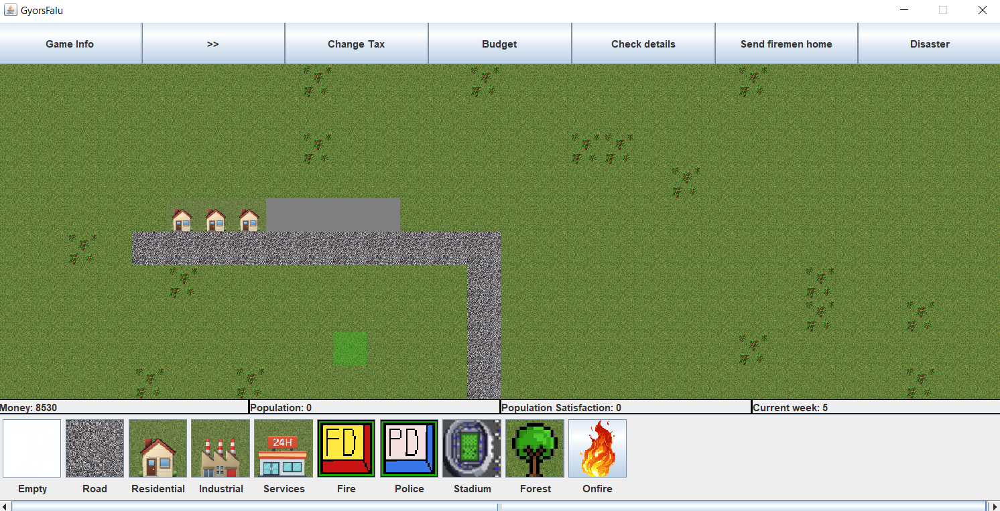 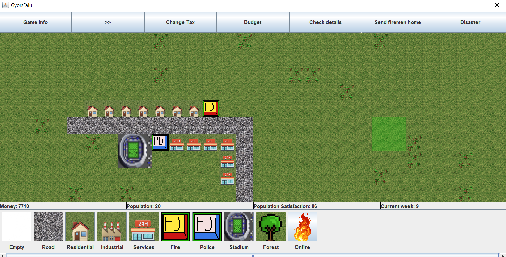 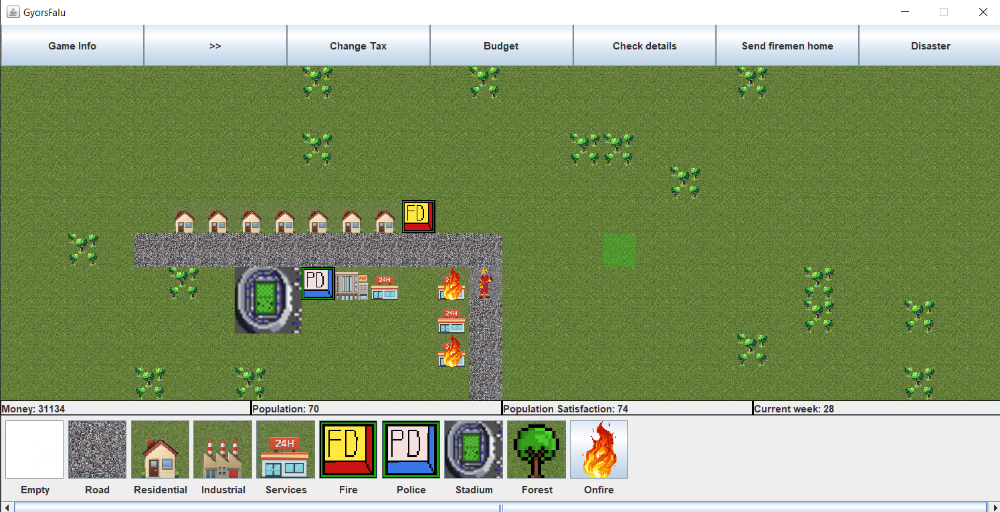 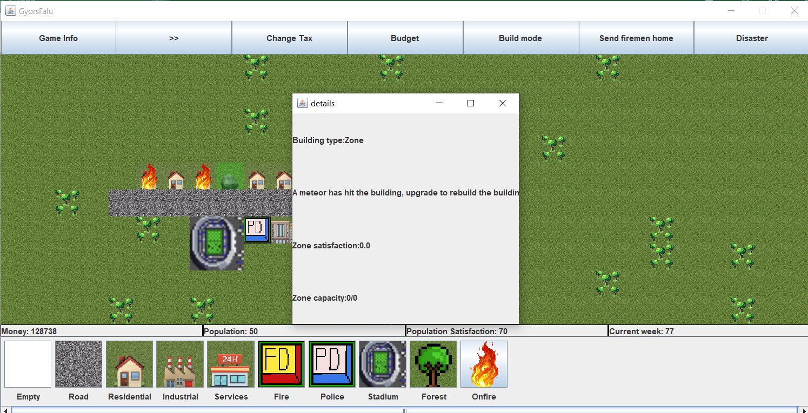 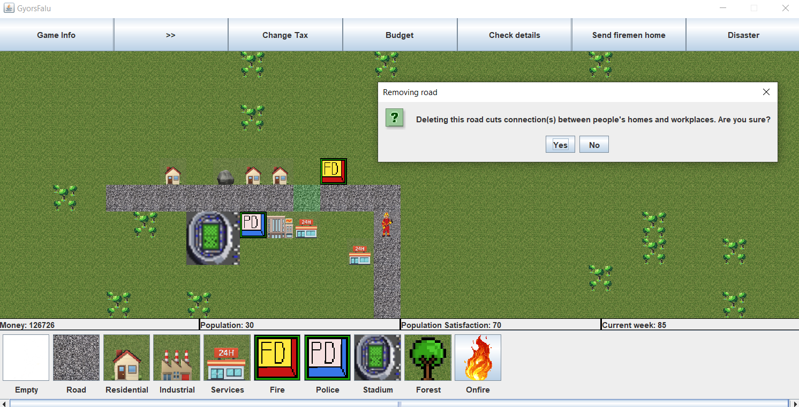
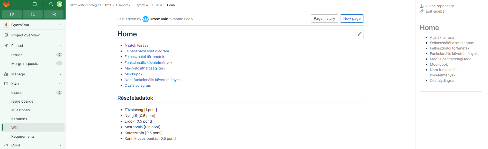
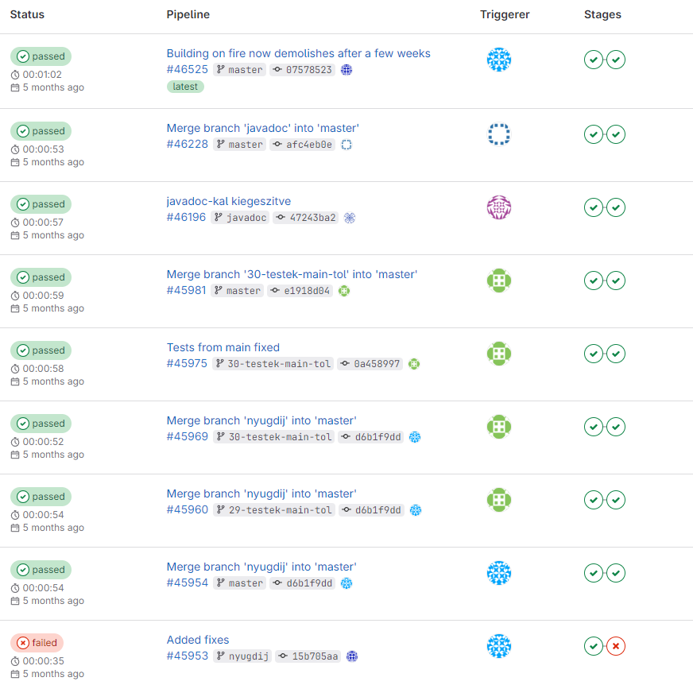
Description: The assignment was to create a website on a topic of my choice.
View the site(hungarian).
Download the project files.
- The website contains at least four static HTML pages, where the home page is saved as index.html. All HTML pages, that are included in the package are linked to the pages, there are no unnecessary HTML files.
- There is a page, where a JavaScript code that improves the user experience is inserted (for example: selection from an alternative style sheet, font size change, image gallery, ...) The Bootstrap framework's components are also acceptable at this point (for example: Carousel).
- An alternative, uppercase, high-contrast style version is available for visually impaired users on all pages.
View the site(hungarian).
Download the project files.
Description: The assignment was to create a game with lamps in javascript.
View the game(hungarian).
Tasks(hungarian).
Download project files.
View the game(hungarian).
Tasks(hungarian).
Download project files.
Description: The assignment was to create a 2 player Tron game in Java.
Full task-list(hungarian).
Download packaged game. (Ps.: The packaged game does not contain the database part, so the game can be run without it.)
Download project files. (Ps.: The project files contain the database part.)
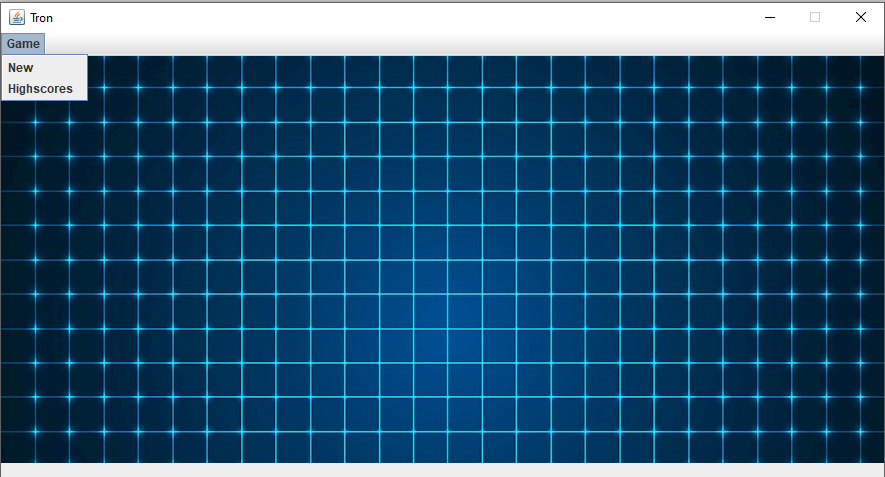 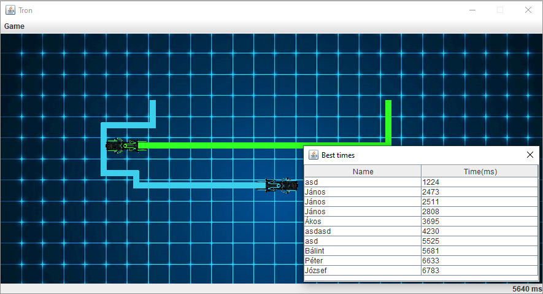
Full task-list(hungarian).
Download packaged game. (Ps.: The packaged game does not contain the database part, so the game can be run without it.)
Download project files. (Ps.: The project files contain the database part.)
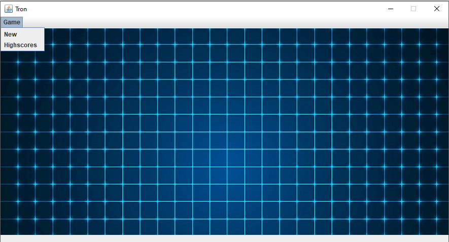 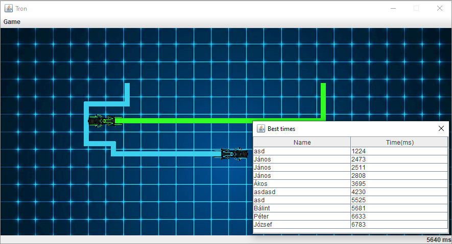